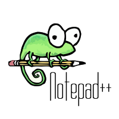
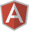

Or git clone from your terminal…
Let’s get started!
Setting up your project is as easy as 1—2—3!
To setup your project, cd into your project directory and do the following...
-
Install
bower,grunt-cliandcompassmodules globally. This is a one time task.npm install -g bower npm install -g grunt-cli gem install compass
-
Set up local node dependencies. This installs all the node dependencies into the
node_modulesdirectory.npm install
-
Set up the UI component dependencies. This installs all the UI dependencies into the
app/componentsdirectory.bower install
… and that’s all! You’re good to go!
Development tools
Don’t have the required development tools? Don’t worry! We’ve got your back!
You’ll find the following tools helpful for your development…
-
Sublime Text v3, build 3047
Sublime Text is a cross-platform text and source code editor.
-

Notepad++ v6.5.1
Notepad++ is a text editor and source code editor for Windows.
-
Git v1.8.4.2
Git is a distributed revision control and source code management (SCM) system with an emphasis on speed.
-
Node.js v0.10.21
Node.js is a software platform that is used to build scalable network (especially server-side) applications.
-
npm v1.3.11
npm is the official package manager for Node.js.
-
Google Chrome v30.0.1599.101
Google Chrome is a freeware web browser developed by Google.
-

AngularJS Batarang
AngularJS Batarang extends the Developer Tools, adding tools for debugging and profiling AngularJS applications.
-
Ruby v1.9.3-p448
Ruby is a dynamic, reflective, object-oriented, general-purpose programming language.
Next steps…
Hungry for more AngularJS?
Here are some great resources where you can learn more about AngularJS…
Thank you for coming! Have fun and happy coding!